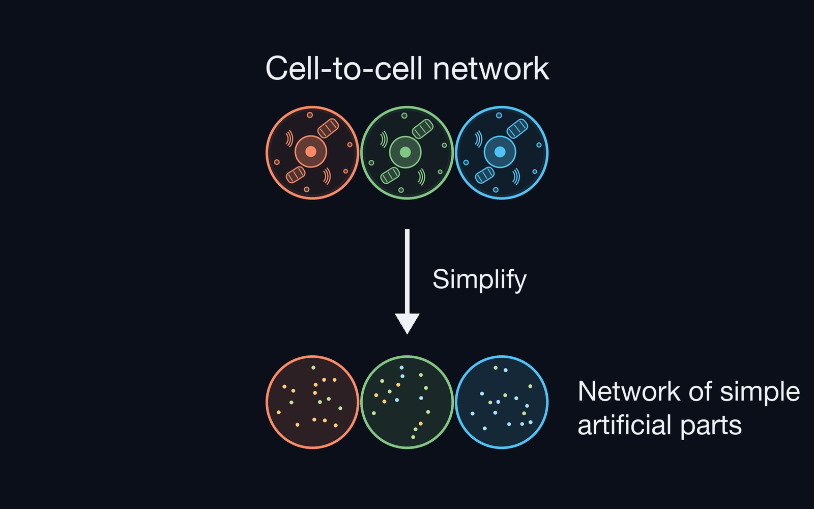
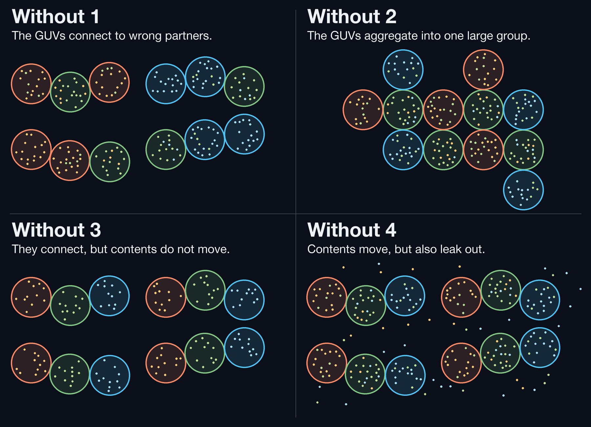
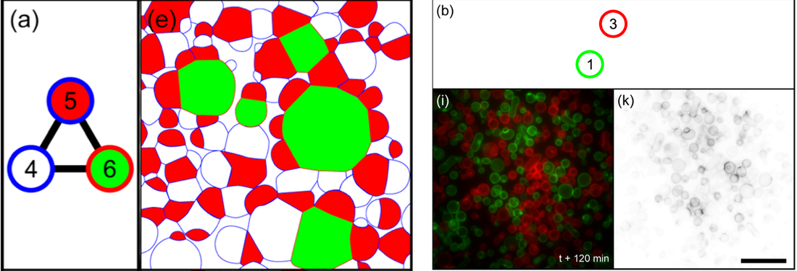
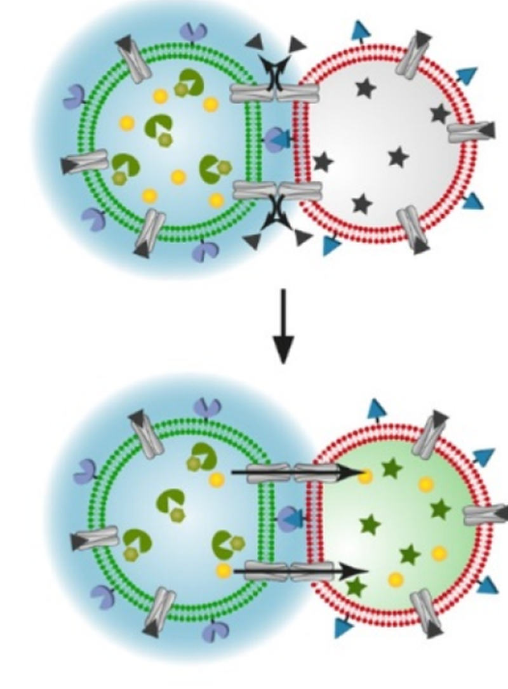
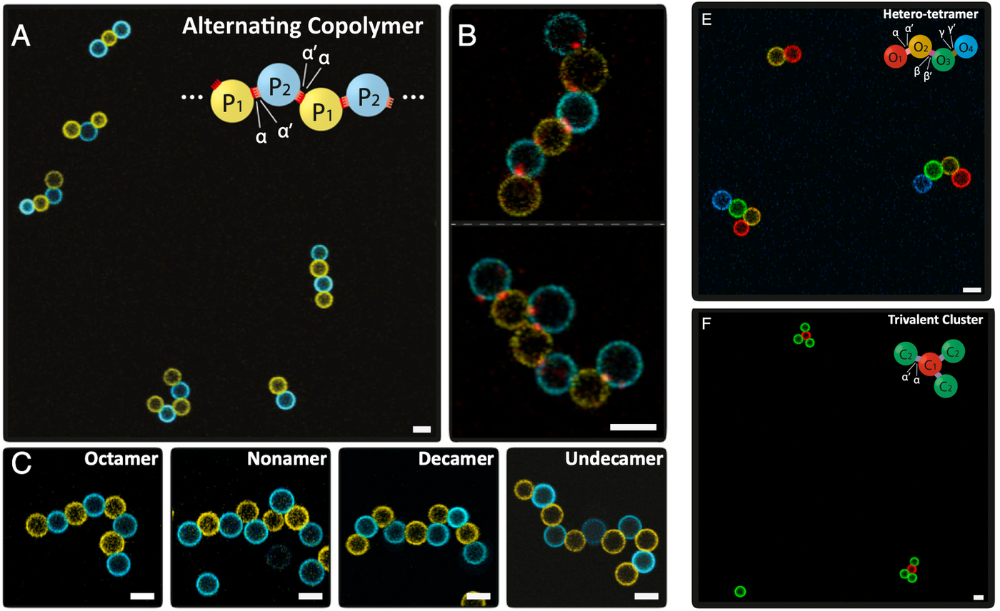
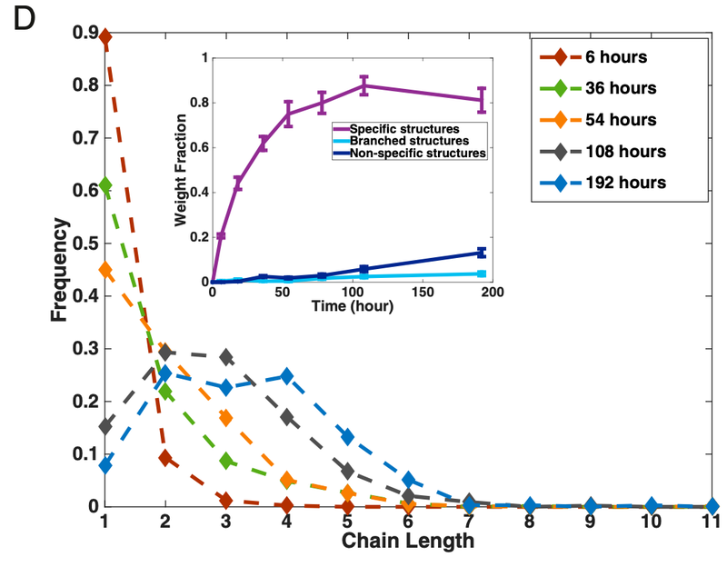

Project

Background
Living things are made of organs, and organs are made of cells. A single cell has limited functions, and cells communicate with one another to carry out more complex functions. Each cell exchanges materials and signals with particular partners. This cell-to-cell communication is the basis of how living systems work. However, a living cell is very complex. In this project, we take the network of communicating cells as a model and build such a network from simple artificial parts.

Issue
To build a network modeled on cell-to-cell networks, we first need a cell-like object that we can build and control. As this controllable cell-like object, we use giant unilamellar vesicles (GUVs). A GUV is a vesicle. Its lipid membrane separates the inside from the outside, as a cell membrane does. Also, GUVs are about 10–100 µm in size, which is close to the size of a cell.
However, simply connecting GUVs is not enough to say that we have built a network modeled on cell-to-cell networks. We considered that the following four elements are necessary for a network modeled on cell-to-cell networks.

Connection
1. Connecting with intended partners
2. Connecting with an intended number of partners
Material exchange
3. Exchanging contents between connected GUVs
4. Reducing leakage from unconnected GUVs
Previous studies have connected vesicles such as GUVs. These studies have realized some of the elements required for a network modeled on cell-to-cell networks.
Hadorn et al. prepared three types of GUVs of micrometer size (mean diameter 5–9 µm). They attached DNA to the surface of each type and controlled which GUVs bind to each other. GUVs with complementary DNA formed assemblies. GUVs with non-complementary DNA did not bind to each other and stayed solitary [1].
This is an example that satisfies element 1 (connecting with intended partners) of the four elements required for a network modeled on cell-to-cell networks.

Chakraborty and Wegner attached proteins that bind to each other under blue light to the surfaces of two types of GUVs. They used light to make the GUVs adhere. They also placed α-hemolysin pores, closed with TRIMEB, in the membranes of both types of GUVs. They showed that Ca²⁺, one of the contents of the sender GUV, moved to the receiver GUV at the place where the GUVs adhered [2].
This is an example that satisfies element 3 (exchanging contents between connected GUVs) and element 4 (reducing leakage from unconnected GUVs) of the four elements.

Zhang et al. attached rafts made of DNA origami to the surface of emulsion droplets. The rafts gathered into patches, and each patch carries DNA (sticky ends) used for binding to a partner droplet. By deciding the number of patches and the DNA sequence for each droplet, they controlled the type and the number of partners that a droplet binds to. However, the patches are gathered locally on a part of the droplet surface, so it takes time for a patch to meet the patch of a partner droplet. In fact, they state that the time for droplets to form dimers is about 400 times longer than for uniformly coated droplets. Also, in the experiment to form long chains, it took about 8 days (192 hours) [3].
This is an example with droplets, not GUVs, but it satisfies element 1 (connecting with intended partners) and element 2 (connecting with an intended number of partners) of the four elements. However, its binding speed is a problem.

Zhang et al. state that the speed of binding and the control of the number of partners are in a trade-off relationship. Droplets uniformly coated with DNA bind quickly, because they bind wherever their surfaces touch. However, the number of partners they bind to was not controlled. With patches, the number of partners can be controlled, but the binding becomes slow as a cost [3]. To satisfy element 2 (connecting with an intended number of partners) while solving the problem of slow binding, it is necessary to control the number of partners with the binding parts spread evenly over the whole surface.

In addition, as far as we know, an example that satisfies all four elements required for a network modeled on cell-to-cell networks has not been confirmed yet.
Solution
To satisfy element 2 (connecting with an intended number of partners) with the binding parts spread evenly over the whole surface, we decided to combine the following two methods.
-
Many weak bonds
We weaken each individual bond, so that binding does not occur when only a few binding parts are available. This is because, if binding occurs with only a few parts, binding starts at many places on the surface of a GUV. -
Surface density of the binding parts
We adjust how many binding parts there are per unit area of the surface. When a GUV binds to its first partner, most of the parts are consumed, and only a few parts remain. This creates a state in which the GUV cannot bind to a second or third partner.

We devised our own network. It is the Accurately Linkable GUV Network (ALiGN). It satisfies element 2 (connecting with an intended number of partners) with the binding parts spread evenly over the whole surface, and it satisfies all four elements required for a network modeled on cell-to-cell networks.
Connection (see Specific Connection Between GUVs)
1. Connecting with intended partners
DNA strands with different sequences on the GUV surface connect each GUV only to its intended partner (sequence-specific binding).
2. Connecting with an intended number of partners
Very short DNA strands that bind weakly, and a tuned surface density of these strands, prevent aggregation, so each GUV connects only with an intended number of partners (many weak bonds and surface density of DNA).
Material exchange (see Pore Formation for Material Exchange)
3. Exchanging contents between connected GUVs
α-hemolysin makes pores in the GUV membrane. This makes a path for the contents to move between connected GUVs (α-hemolysin as a pore).
4. Reducing leakage from unconnected GUVs
TRIMEB works as a lid on the pores. It reduces leakage of the contents of unconnected GUVs (TRIMEB as a lid).
References for the Project
[1] Hadorn, M., Boenzli, E., Sørensen, K. T., De Lucrezia, D., Hanczyc, M. M. & Yomo, T. Defined DNA-mediated assemblies of gene-expressing giant unilamellar vesicles. Langmuir 29, 15309–15319 (2013). https://doi.org/10.1021/la402621r ↩ Back to the text
[2] Chakraborty, T. & Wegner, S. V. Cell to cell signaling through light in artificial cell communities: glowing predator lures prey. ACS Nano 15, 9434–9444 (2021). https://doi.org/10.1021/acsnano.1c01600 ↩ Back to the text
[3] Zhang, Y., He, X., Zhuo, R., Sha, R., Brujic, J., Seeman, N. C. & Chaikin, P. M. Multivalent, multiflavored droplets by design. Proc. Natl. Acad. Sci. U.S.A. 115, 9086–9091 (2018). https://doi.org/10.1073/pnas.1718511115 ↩ Back to the text